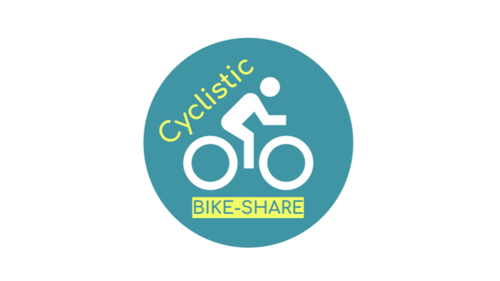
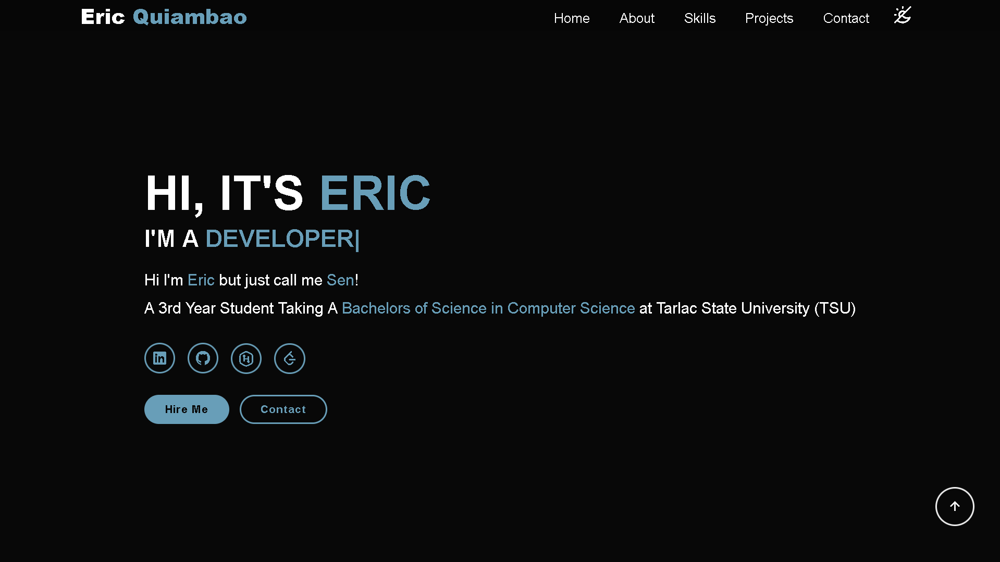
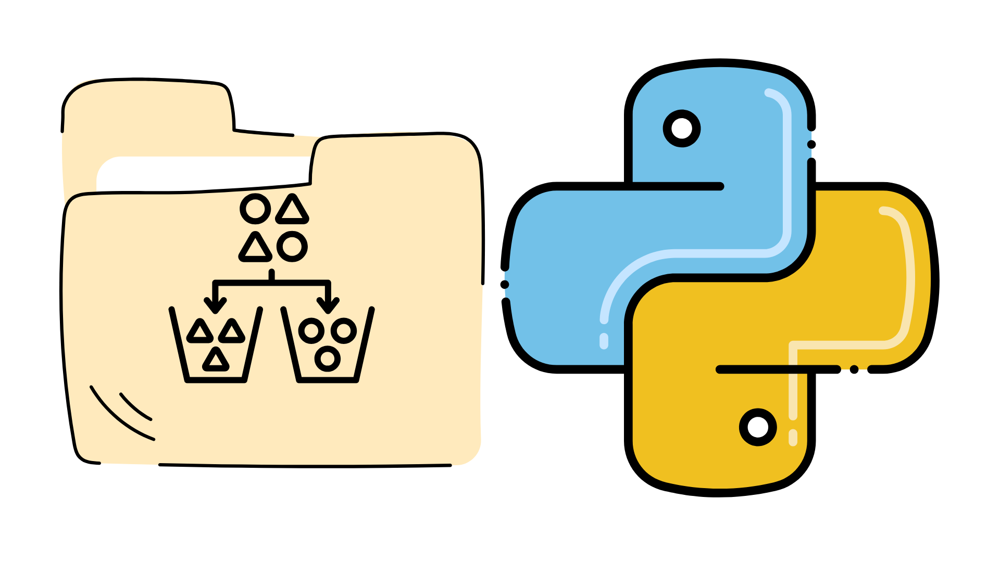

Hi I'm Eric but you can just call me Sen!
I am a 4th Year Student Taking A Bachelors of Science in Computer Science at Tarlac State University (TSU)
During my time in the Accounting, Business, and Management (ABM) track, I developed a solid foundation in essential business principles and practices.
The curriculum helped me enhance my analytical and critical thinking skills, enabling me to approach various challenges with a strategic mindset.
Additionally, I participated in workshops that broadened my understanding of current trends, preparing me for diverse opportunities in the future.
Pursuing a Bachelor's of Science in Computer Science has allowed me to explore various domains such as
web development, database management, and discrete mathematics.
The program emphasizes critical thinking and innovation, enabling me to tackle complex challenges in the tech industry.
I have gained proficiency in multiple programming languages and tools, which are essential for my future career.

Analyzed a
Leveraged Sheets to clean data, built an interactive dashboard using Tableau, then cross validated results using SQL in Google Query
Identified seasonal usage trends to make informed targeted marketing strategies aimed at converting casual riders into annual members,
Developed a
Preprocessed and normalized transactions (Standard Scaler), removed duplicates, applied SMOTE to oversample fraud cases, to train the model Logistic Regression model with the data.
Achieved
Developed a
Implemented
The model was

Built a
Utilized

This program uses Python's
It scans the directory, checks file extensions, and moves them to the appropriate folder, creating folders if needed.
This
The certificate provided a comprehensive foundation in the end-to-end data analysis process,
focusing on practical tools and methodologies.
I learned to collect, clean, and organize data using spreadsheets and SQL,
apply exploratory data analysis to uncover trends,
and create visualizations with tools like Tableau to support data-driven decision making.
Emphasis is placed on critical thinking, effective communication of insights to stakeholders,
and best practices in ethics and data privacy, preparing learners to contribute
to cross-functional teams and drive operational improvements through actionable analytics.
Introduced core concepts of artificial intelligence and machine learning,
offering a strategic overview of how AI technologies can be leveraged within
business contexts.
The curriculum covers basic ML algorithms, model lifecycle considerations, and AI ethics,
with case studies illustrating real-world applications.
By guiding learners through the fundamentals of supervised and unsupervised learning,
as well as outlining responsible AI principles,
this certification equiped me to evaluate AI opportunities,
collaborate effectively with technical teams, and align AI initiatives with organizational objectives.
The course delves into contemporary AI advancements
and their operational implications across industries.
It surveys key technologies such as deep learning architectures,
natural language processing, and computer vision, and discusses integration challenges,
scalability, and security considerations in enterprise deployments.
The course emphasizes a forward-thinking perspective on emerging AI trends, risk management, and
change management processes necessary for successful adoption.
Letting me gain the ability to assess AI maturity, contribute to project scoping, and
support cross-functional teams in implementing robust, responsible AI solutions.
Cisco’s course outlined the data science workflow,
from problem formulation through deployment of analytical solutions.
I explored statistical foundations, data wrangling techniques,
and basic machine learning models, with a focus on interpreting results and
translating findings into business recommendations.
The program highlighted industry-relevant scenarios, such as network performance optimization or
customer behavior analysis, demonstrating how data science drives strategic decision making.
By combining theoretical insights with hands-on exercises,
it prepared me to engage in data-driven projects within enterprise environments.

UPOU’s course provided a structured approach to leveraging data for strategic business outcomes.
It covered the analytics lifecycle, from identifying business objectives and stakeholder needs to
designing analytic frameworks that drive performance measurement and continuous improvement.
With an emphasis on aligning analytics initiatives with organizational strategy,
the course prepared me to collaborate with leadership, optimize processes,
and deliver insights that enhance competitiveness.
This course provided practical lessons and hands-on examples focused on data manipulation and visualization using Python.
It covered key libraries such as NumPy for numerical operations, Pandas for data analysis and manipulation, and Matplotlib for data visualization.
The course emphasized how to use these tools effectively to extract insights and communicate data-driven results, showcasing Python's versatility in the field of data science.